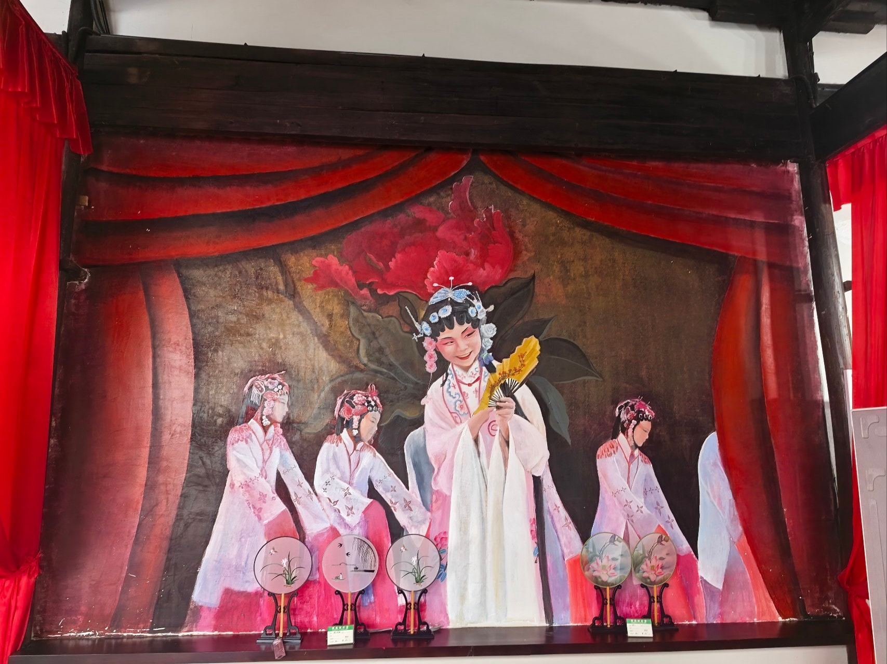
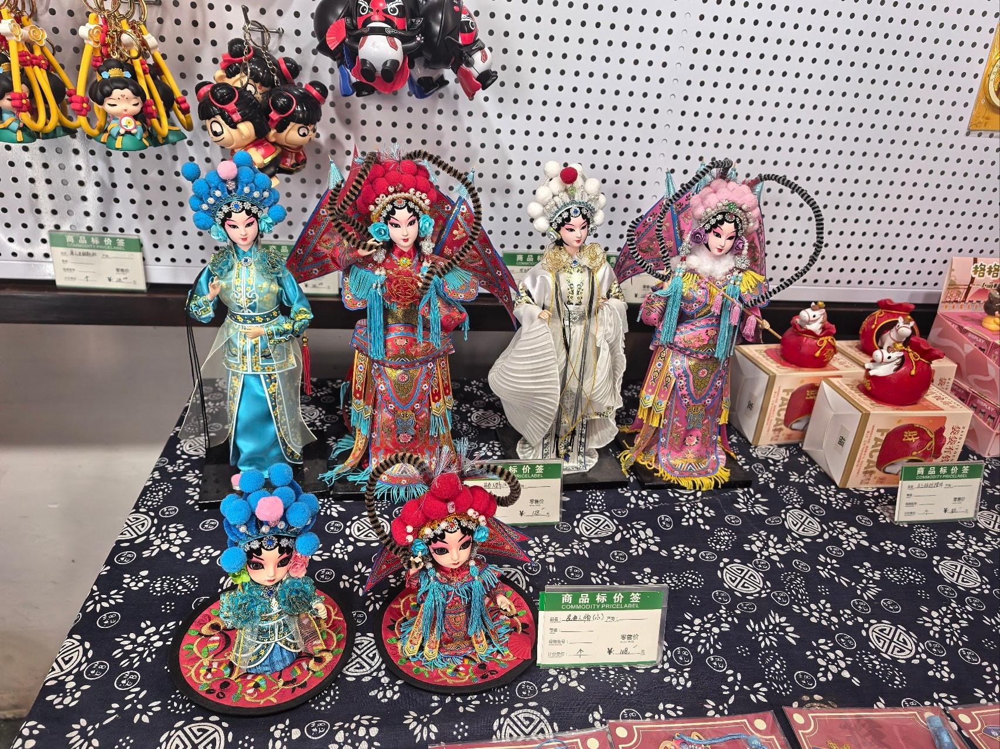

国保公共建筑（老年活动室）
老屋里传唱的昆曲新叶村老年活动室（昆曲馆）
这里是新叶村的老年活动室，同时用作昆曲展陈空间。走进其中，村民日常活动的场所与新叶昆曲的行头、图像交织在一起。
01
村里的昆曲馆

新叶村把老年活动室与昆曲展陈放在同一屋檐下，使村民的日常公共生活与乡土戏曲彼此相遇。这里不是专门的剧场，却为人们了解新叶昆曲、观看相关行头与图像提供了一处亲切的村中空间。
02
新叶昆曲，省级非遗

新叶昆曲是流传于新叶村一带的地方戏曲，以折子戏见长。2009年，它在浙江省非物质文化遗产普查中受到关注，后来被列入浙江省非物质文化遗产名录。昆曲在这座小村延续至今，是新叶人耕读传家之外，另一条鲜活的文化脉络。